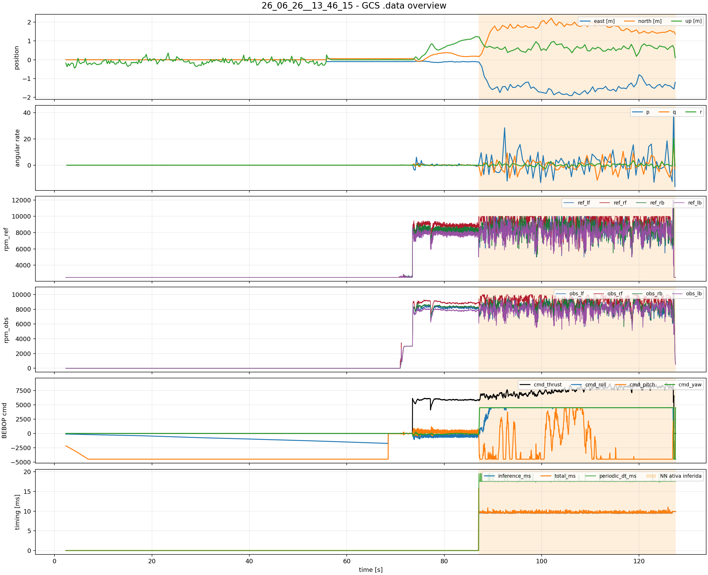
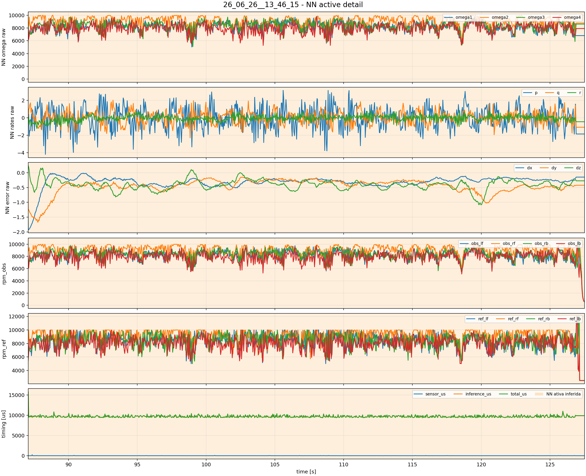
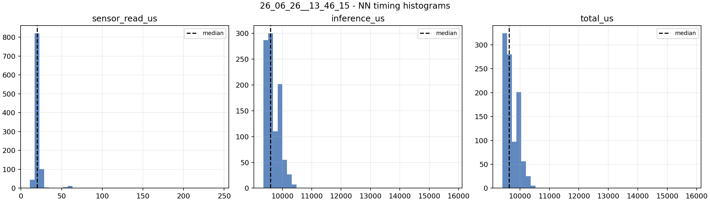

26_06_26__13_46_15 GCS .data analysis
NN active intervals inferred from NN_CFC_INPUTS: [(87.071, 127.507)]
26_06_26__13_46_15_overview.png

26_06_26__13_46_15_nn_active_detail.png

26_06_26__13_46_15_timing_histograms.png
